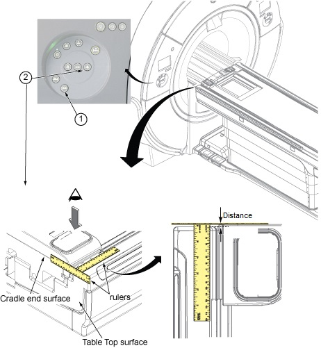

Short Plastic (non
magnetic) ruler (1 ruler with 0mm start from side end is needed)
2
-
-
-
About this task
This procedure describes Cradle Home Position Check.
Procedure
Move the cradle to Home Position.
Slowly move the cradle in until the distance between cradle
end and Table top end becomes 4mm using two
rulers.
Note
Since actual distance is important, use rulers instead
of the display of IRD.
Press Down pedal and confirm the Table does not move down.
Note
Home sensor switch should be adjusted to work when the
distance is within 2mm to move down the Table. If the Table moves
down when the distance is 4mm, Home sensor switch adjustment is needed.
Figure 1. Position Check

If it passes, this is the end of functional
check.